Variance Release History
New to 3.6 (Jun 14 2019)
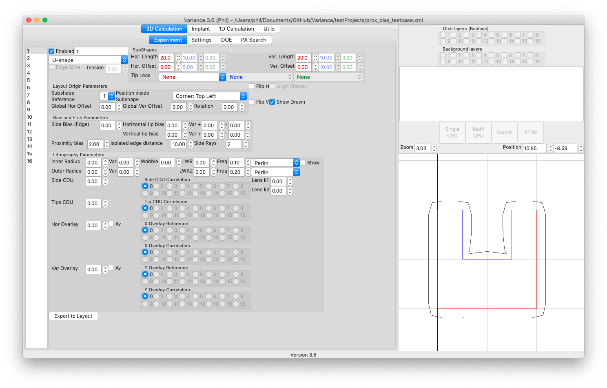
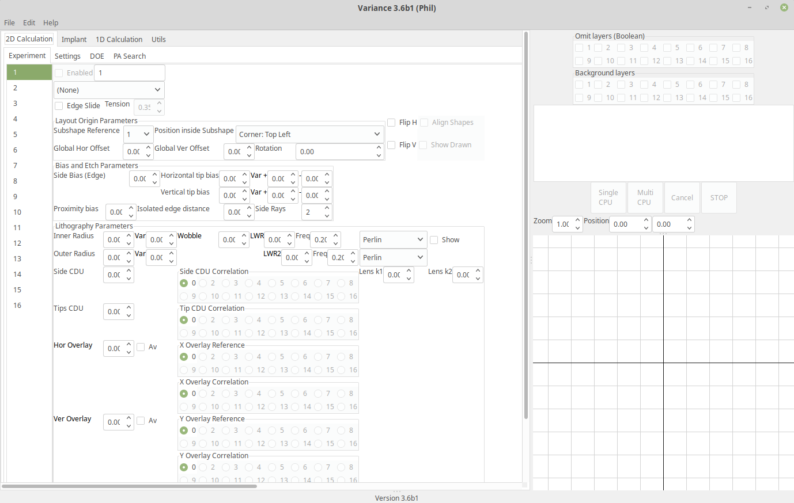
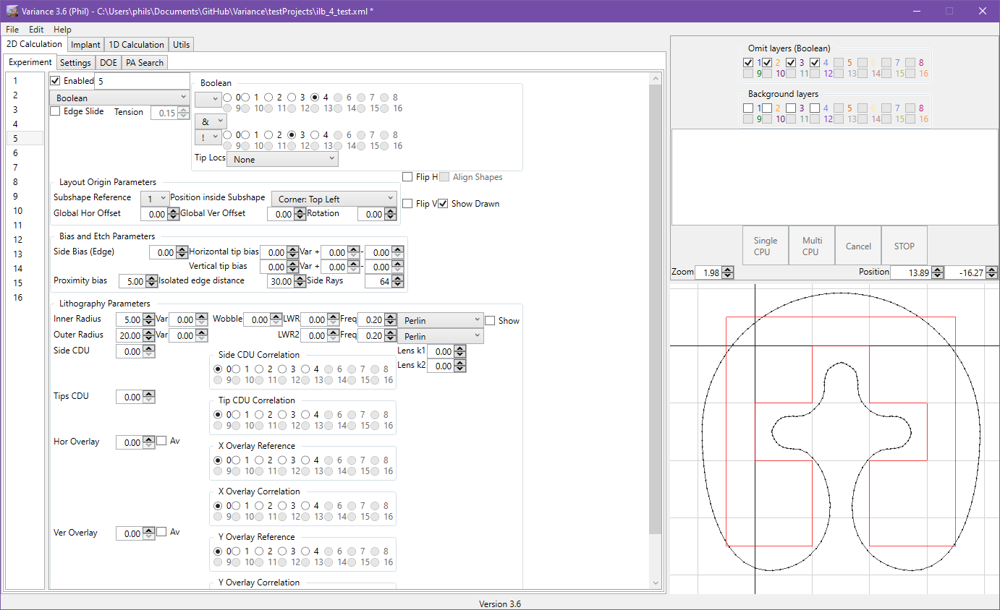
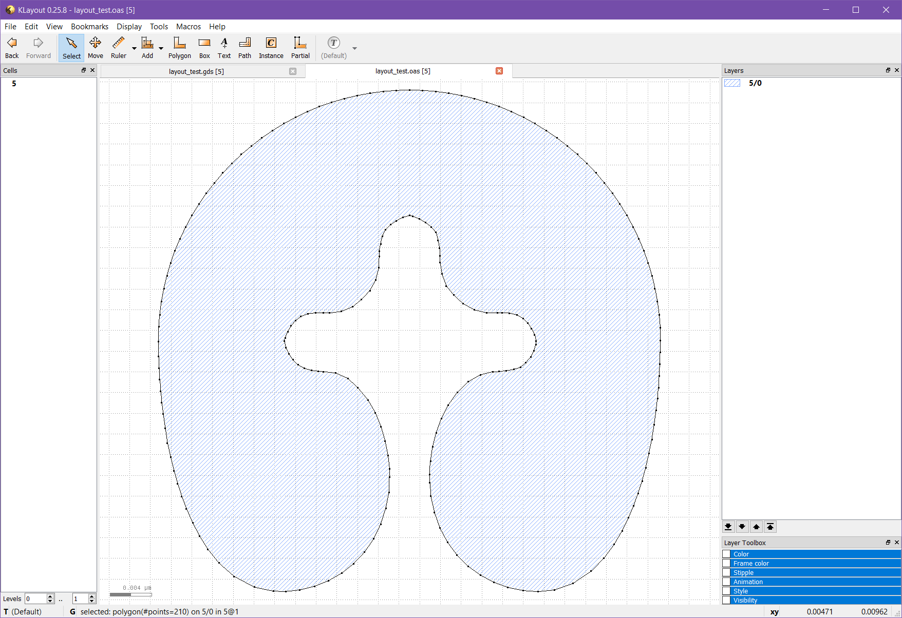
- Keyholing added for enclosed holes in geometry.
- Performance enhancements in the overlap/spacing system.
- Boolean engine enhancements.
- Layer contours can now be exported to GDSII or Oasis, if desired.
- User interface rewrite.
- Resizable UI.
- Move to modern UI toolkit (WPF) on Windows.
- Performance work through reduction of user interface code.
- Automatic layout code, improving appearance on macOS and GTK.
- macOS available as a stable implementation.
- Dark mode support.
- Platform limits performance compared to Windows.
- Linux/GTK available as a stable implementation.
- Platform limits performance compared to Windows.
New to 3.5.1 (Feb 20 2019)
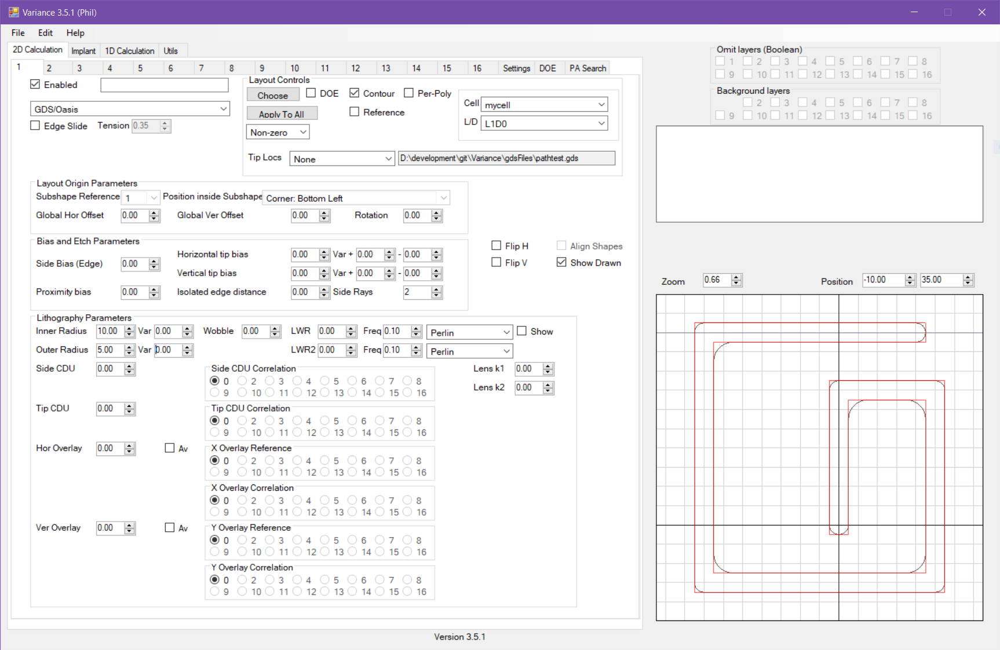
- New licensing system.
- Quilt CSV support in the DOE system.
- User interface refinements.
- Performance work through extra event filtering.
- Camera position gadgets added.
- geoCore updates.
- Performance enhancements involving partial rework of internal data representation, enabling multithreading.
- Path support.
- Improvement in handling repetition.
- Better handling of invalid cellrefs.
- Bug fixes.
- UI fix for layer transposition (layer booleans, correlations).
- UI fix for status bar readout.
New to 3.5 (Oct 8 2018)
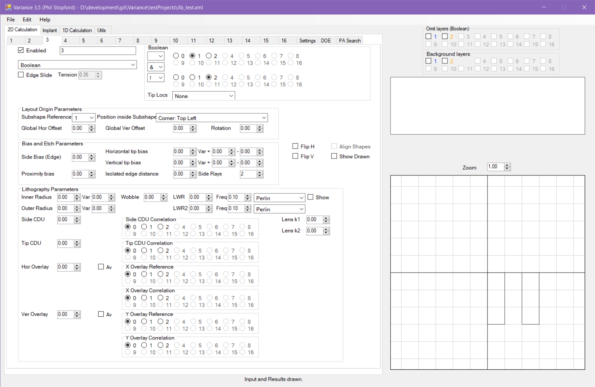
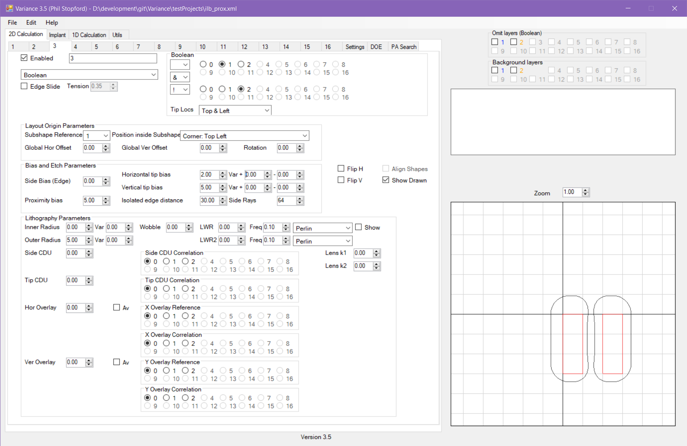
- User interface refinements.
- In-layer boolean.
- Optimized internals to avoid calls to shape system for viewport changes (drawn and background polygon display) - improves interactivity.
- Adaptive multithreading in raycaster.
- Maximize CPU usage and performance for proximity biasing.
- Performance boost for overlap calculations.
- Multithreaded noise application (LER).
New to 3.4 (Jun 15 2018)
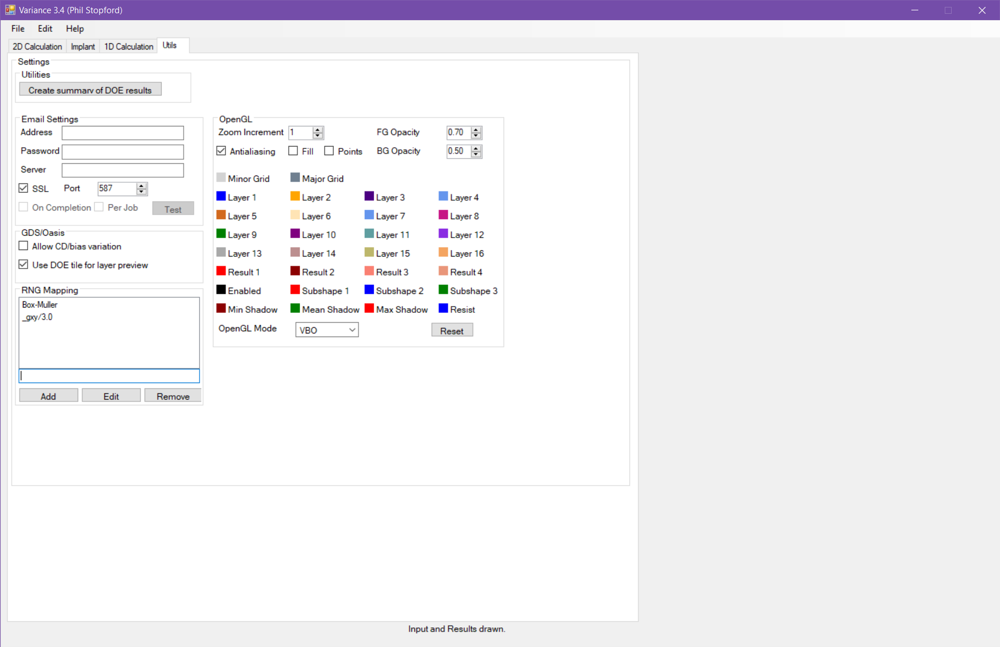
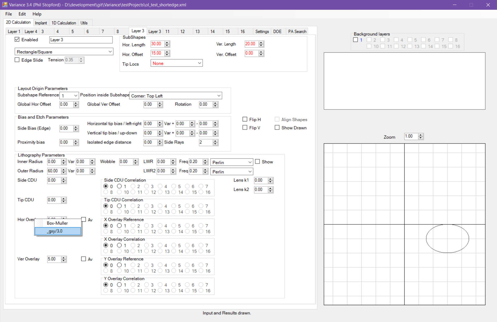
- Custom RNG mapping support, allowing for per-input non-Gaussian distributions on variations.
- Extended PA search system from 3.3.
- Secondary LWR implementation, allowing for a mix of low and high frequency noise.
New to 3.3 (Apr 30 2018)
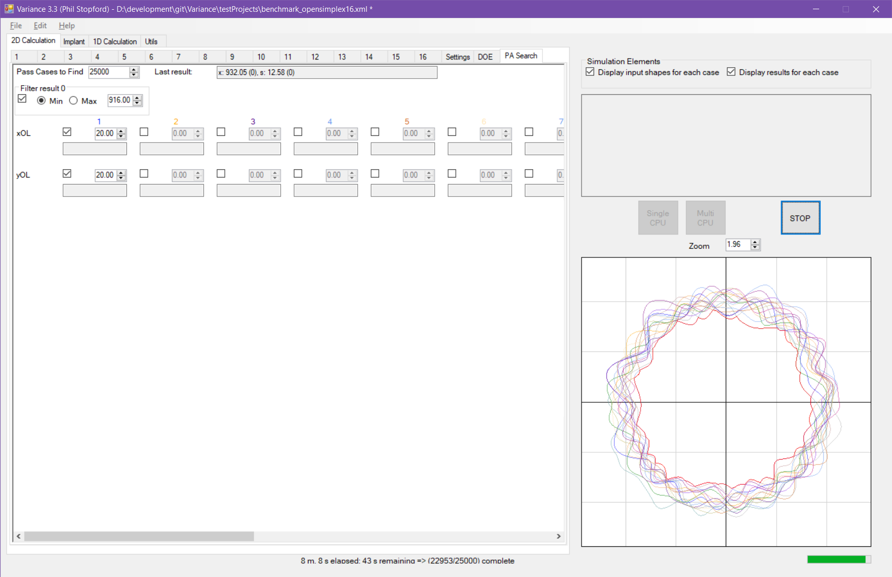
- Process Assumptions search from target result value.
- Boolean engine enhancements.
- Refactored to 'always do the right thing', addressing edge case issues.
- geoCore enhancements.
- Oasis layer name support.
- Removed some constraints on the layout that could be read in.
New to 3.2 (Mar 30 2018)
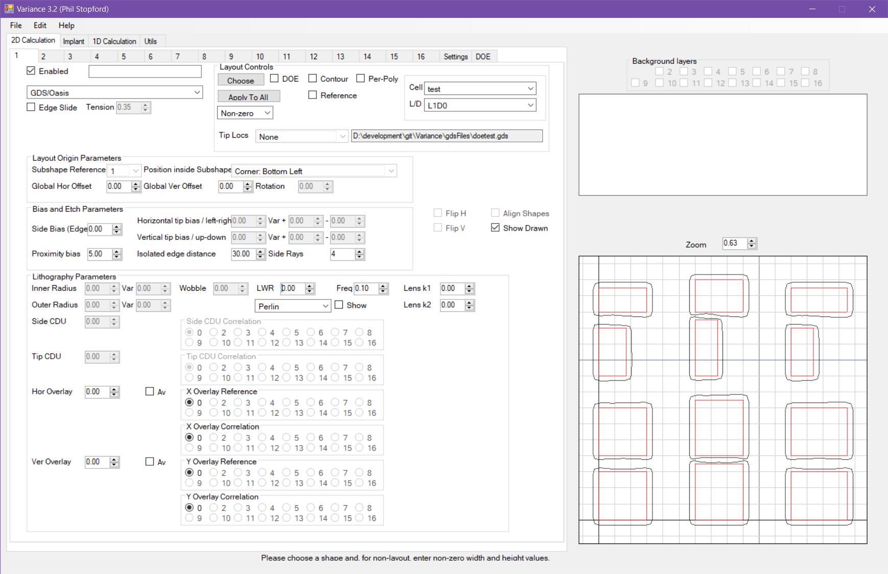
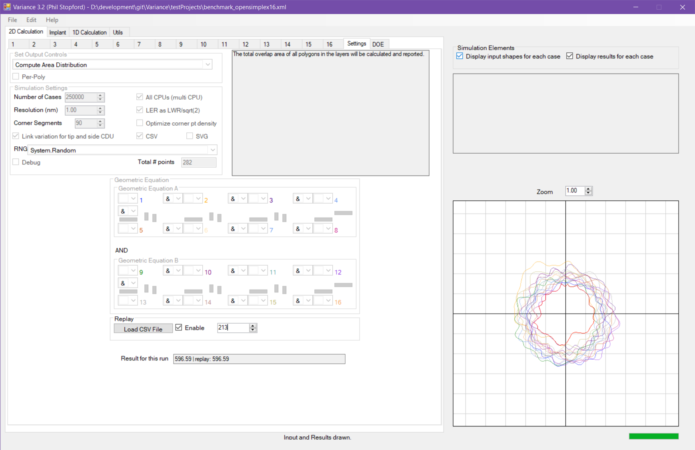
- Contouring is now processed in the background, making the UI more responsive when working with larger datasets.
- Layout referencing, to enable regression testing.
- System will load layout, adapting to changes (cell, layer/dataype) to pull in updated geometry.
- Fall-back to in-XML geometry.
- Proximity biasing.
- Reproduce pitch dependent effects, such as spacer thickness increasing with pitch.
- Replay has arrived!
- Using a CSV with the project file, you can now inspect specific cases, even from DOE projects. The case is rebuilt from the combination so that you can inspect failure modes.
- Fixes:
- Improvements to chord system - addressed an edge case scenario where chord-type assignment ran into trouble.
- Improvements to non-overlap spacing/enclosure value reporting.
- Misc fixes.
New to 3.1 (Feb 18 2018)
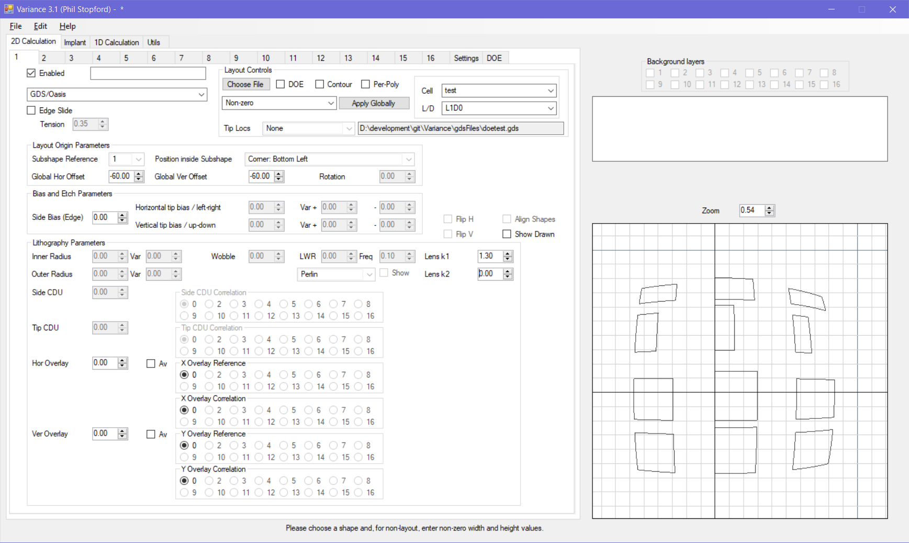
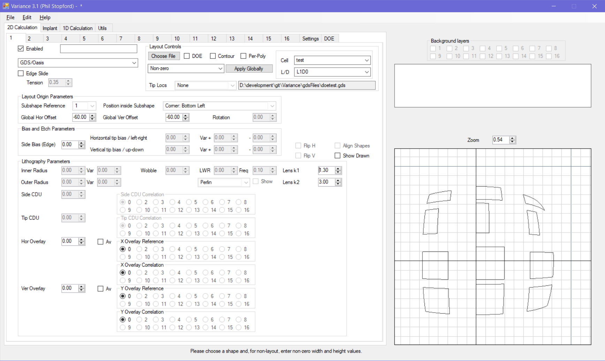
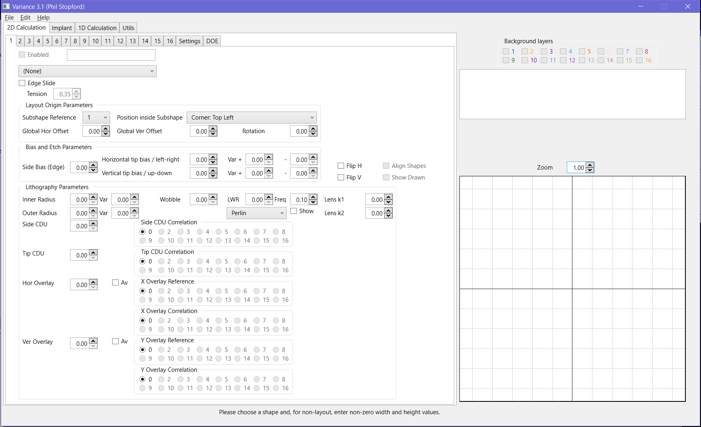
- Improved handling of non-orthogonal polygons coming from geoCore (including mixed configurations).
- Non-orthogonal polygons receive side bias, LER, rotation. Tip definition and related settings are not supported, however.
- Performance improvements related to loading projects.
- Overlap calculation improvements.
- Lens distortion model, based on Zhang.
- Noise application improvement, avoiding periodicity-related 'nodes'.
- Project files store location and zoom for each viewport.
- Save viewport display to SVG file.
- WPF implementation of UI, beta grade.
- UI works, but there are some quirks to be ironed out. Work ongoing.
New to 3.0.1 (Dec 23 2017)
- Overlap engine enhancements.
- Overlap deconstruction methodology improved.
- Spacing engine enhancements.
- Orders-of-magnitude improvement in performance (runtime, memory) for multi-polygon input layers.
- Now < 200 MB and 32500 cases in 8.5 minutes. Pre-3.0.1 : ~15 GB, many minutes for a single case.
- Additional code optimizations for a 10-25% speed improvement in typical, simpler cases.
- Added tooltip information to most controls in the interface, to improve usability.
- Allow per-polygon rotation/wobble for geoCore inputs.
- Allow negative values for DOE column and row offsets.
- Bug fix to the wobble application.
- Code optimizations/refinements without user impact.
New to 3.0 (Nov 8 2017)
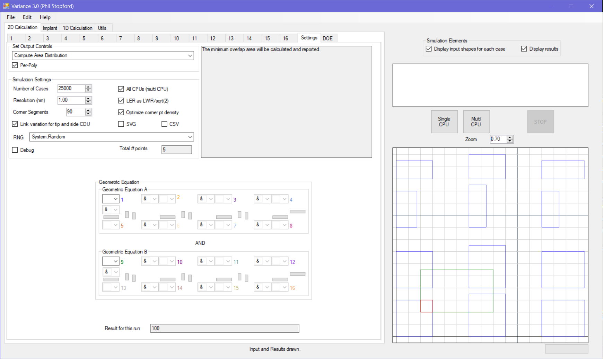
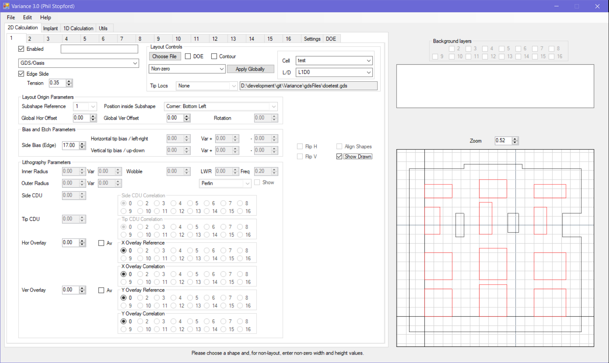
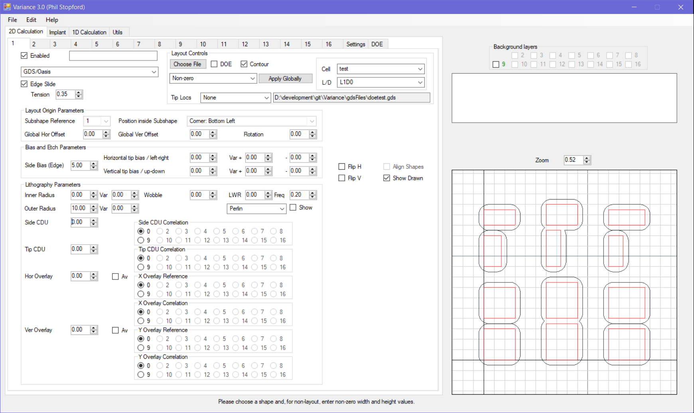
- Ability to revert to settings from project file.
- User interface now highlights when your project settings differ from those that were loaded in.
- Simplex noise implementation overhauled.
- Per-poly option added to area calculation, allowing for minimum overlap area evaluation (e.g. contact hole cases).
- Project files now store the implant simulation in addition to the multi-layer geometric simulation.
- One project file can now encapsulate enclosure and shadowing calculations, for example.
- Improved geoCore biasing methodology.
- Advanced license now enables 16 layers.
- Identical performance to 2.x for 8 layer and 4 layer cases. Calculation time remains linear with number of active layers.
- geoCore overhaul
- Cell reference improvements.
- Memory usage reduced by 33% due to internal optimizations.
- Background loading keeps user interface responsive.
- GeoCore enhancement boosts GDS loading speed by 4x.
- Comments can be set for layers, DOE and simulation settings for documentation purposes. They are retained in project files.
- Large, single viewport system. Greatly improved speed and reduced resource usage.
- User can now choose VBO or immediate mode OpenGL in case of driver issues.
- OpenGL viewport fallback to immediate mode if VBO isn't supported on host system.
- Brand new user interface (requires 1920x1080), to accommodate the additional layers and controls.
- Internal architecture moved to a generalized UI definition and handling system for each layer.
- Vastly simpler and much smaller codebase from this approach.
- Experimental 'modern' WPF user interface.
- Bug fixes and optimizations
- Code simplification and optimization through refactoring of various systems.
- Fixed staircasing of geoCore contours in certain situations.
- Fixed misc UI issues in geoCore case.
- Fixed misc UI issues from transposing layers in the simulation panel. (Eto.Forms bug)
- Fixed misc UI issues from clearing layer / starting a new project. (Eto.Forms bug)